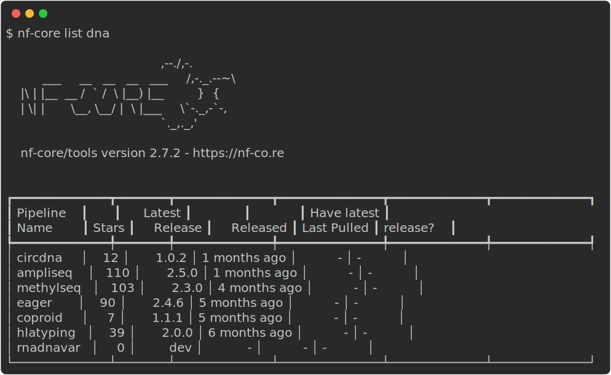

nf-core for users
- Learn more about nf-core tooling for users.
- Use
nf-core listto view information about nf-core workflows. - Use
nf-core downloadto download a workflow and it’s singularity images. - Use
nf-core launchto create a parameters file.
1.4.1 nf-core tools for users
nf-core tools has additional commands to help users execute workflows. Although you do not need to use these commands to execute the nf-core workflows, they can greatly assist and improve and simplify your experience.
There are also nf-core tools for developers. However, these will not be covered as a part of this workshop. If you are curious to learn more about these tools you can find more information on the nf-core websites tools page. There are also lots of excellent ByteSize talks on the nf-core YouTube channel.
1.4.2 nf-core list
The nf-core list command can be used to print a list of remote nf-core workflows along with your local workflow information.
nf-core list
The output shows the latest workflow version number and when it was released. You will also be shown if and when a workflow was pulled locally and whether you have the latest version.
Keywords can also be supplied to help filter the workflows based on matches in titles, descriptions, or topics:
nf-core list dna
Options can also be used to sort the workflows by latest release (-s release, default), when you last pulled a workflow locally (-s pulled), alphabetically (-s name), or number by the number of GitHub stars (-s stars).
Filter the list of nf-core workflows for those that are for rna and sort them by stars. Which rna workflow has the most stars?
Execute the list command, filter it for rna, and sort by stars:
nf-core list rna -s stars1.4.2 nf-core launch
A workflow can have a large number of optional parameters. To help with this, the nf-core launch command is designed to help you write parameter files for when you launch your workflow.
The nf-core launch command takes one argument - either the name of an nf-core workflow which will be pulled automatically or the path to a directory containing a Nextflow workflow:
nf-core launch nf-core/<workflow>When running this command, you will first be asked about which version of the workflow you would like to execute. Next, you will be given the choice between a web-based graphical interface or an interactive command-line wizard tool to enter the workflow parameters. Both interfaces show documentation alongside each parameter, will generate a run ID, and will validate your inputs.

The nf-core launch tool uses the nextflow_schema.json file from a workflow to give parameter descriptions, defaults, and grouping. If no file for the workflow is found, one will be automatically generated at runtime.
The launch tool will save your parameter variables as a .json file called nf-params.json. It will also suggest an execution command that includes the -params-file flag and your new nf-params.json file. The command line wizard will finish by asking if you want to launch the workflow. Any profiles or options that were set using the wizard will be included in your run command.
Generate a schema and run command for revision 3.11.1 of the nf-core/rnaseq workflow using the nf-core launch command. Use the test and singularity profiles and name your output folder my_test_output.
Use the nf-core launch command for the nf-core/rnaseq workflow and follow the prompts:
Your nf-params.json file should look like this:
{
"outdir": "my_test_output"
}Your final run command should look like this:
nextflow run nf-core/rnaseq -r 3.11.1 -profile test,singularity -params-file nf-params.jsonLaunch the workflow from your command line with the run command. You will see the run command will download the required singularity images for you automatically.
You can also use the launch command directly from the nf-core launch website. In this case, you can configure your workflow using the wizard and then copy the outputs to your terminal or use the run id generated by the wizard. You will need to be connected to the internet to use the run id.
nf-core launch --id <run_id>1.4.3 nf-core download
Sometimes you may need to execute an nf-core workflow on a server or HPC system that has no internet connection. In this case, you will need to fetch the workflow files and manually transfer them to your offline system. To make this process easier and ensure accurate retrieval of correctly versioned code and software containers, nf-core has the download command.
The nf-core download command will download both the workflow code and the institutional nf-core/configs files. It can also optionally download singularity image file.
nf-core downloadIf run without any arguments, the download tool will interactively prompt you for the required information. Each prompt option has a flag and if all flags are supplied then it will run without a request for any additional user input:
- Pipeline name
- Name of workflow you would like to download.
- Pipeline revision
- The revision you would like to download.
- Pull containers
- If you would like to download Singularity images.
- The path to a folder where you would like to store these images if you have not set your
NXF_SINGULARITY_CACHEDIR.
- Choose compression type
- The compression type for Singularity images.
Alternatively, you could build your own execution command with the command line options.
Use the nf-core download command to download revision 3.11.1 of the nf-core/rnaseq workflow with it’s uncompressed Singularity images. You can use either the command line options or prompts.
Use the nf-core download command for the nf-core/rnaseq workflow and follow the prompts.
If you were to write your own command and options it would look like this:
nf-core download nf-core/rnaseq --revision 3.11.1 --container singularity --compress none- The nf-core
listcommand can be used to view local and remote information about nf-core workflows. - The nf-core
downloadcommand is a powerful way to download a workflow and its Singularity images. - The nf-core
launchcommand can be a useful tool for writing parameter files.
All materials copyright Sydney Informatics Hub, University of Sydney